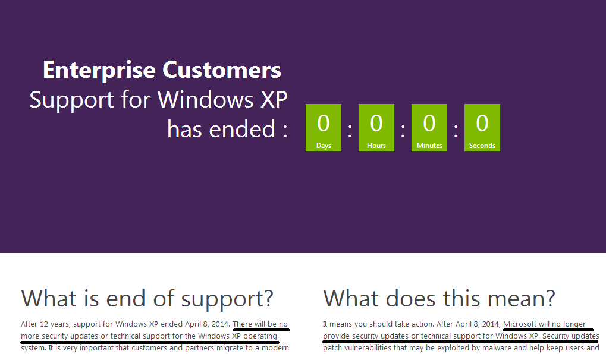
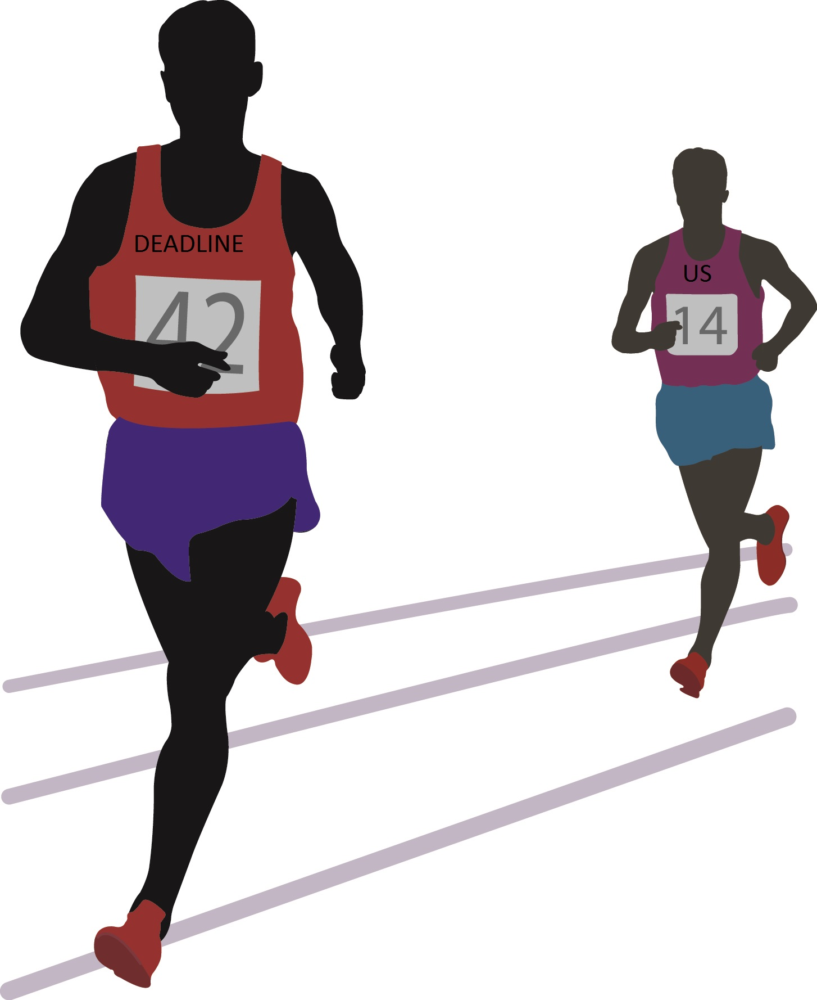
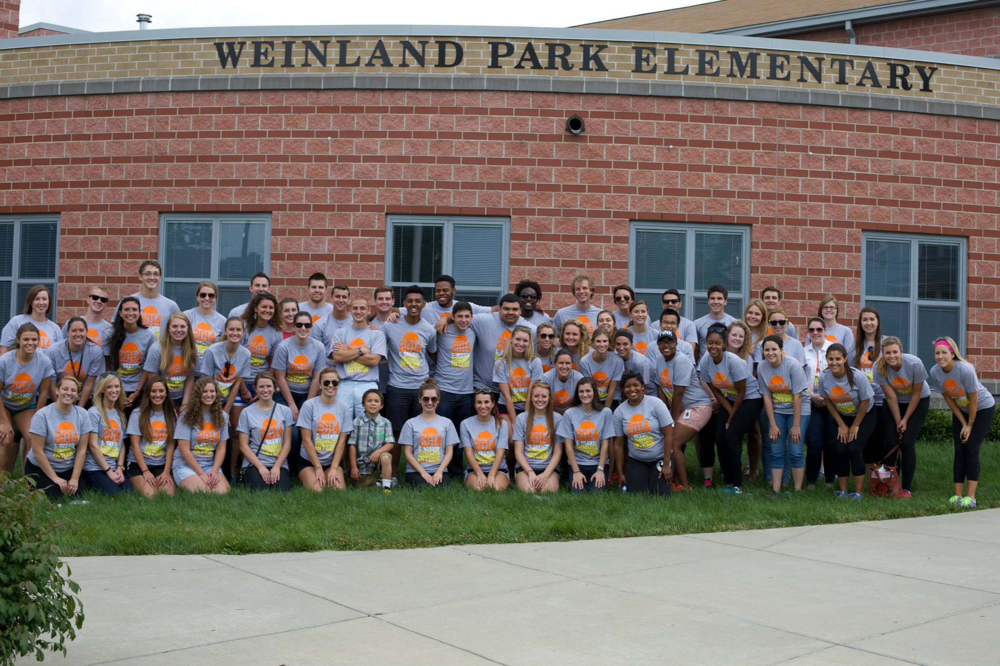

MGT Office Services Department
In-house IT arm
Assist associates w/ computer hardware & software issues
Complete requests to setup new associates w/ laptops, monitors, etc.
Project: Windows 7 upgrade
GOAL: Upgrade all associate laptops and desktops from Windows XP to Windows 7
WHY?
Microsoft (MS) had announced it was ending support for WinXP on April 8th 2014. Meaning WinXP was going to be vulnerable to hacks, malware, viruses, etc.

We want to be using up-to-date versions of Business software
The Perceived Process
- Contact an associate via email/phone
- Schedule time to upgrade
- Upgrade that same day
The Actual Process
- Contact an associate via email/phone
- Schedule time to upgrade
- Depending on several factors this could be days or weeks
- Upgrade: usually no longer than 30mins
It was hard to get associates to commit to a schedule. I found myself rescheduling upgrades which meant we were falling behind.

Why the hold up?
Two things I learned from associates when I finally tracked them down to upgrade:
- A small few were just plain too busy at the moment.
- The majority were afraid of something happening to their data:
- data would be lost
- IE links would disappear
- desktop files wouldn’t transfer
End Result
We reached out department goals!
HOW?
- We switched up our tactics in scheduling with associates
- Some team members put in some weekend hours
What I would have changed
1. Inform
Management should inform associates very early on of the upgrades in a big announcement
- Include why upgrades are needed
- Assure them that their data will all be transferred
- Include that the process take typically less than 30mins.
2. Schedule
Schedule upgrades by department instead of individual associates.
- Set up a timeframe for each department to get upgraded.
- All members of the department get upgraded at the same time
- Eliminates the fear if everyone in the department goes through the transition at the same time.
3. Update and respond
Keep associates updated on the whole process.
What departments have been upgraded and which departments still need to be.
Respond to any additional questions individual associates have.
Lessons learned
- Values & Culture
- Move quick aka "Speed"
- Flexibility
- Efficiency
- Giving Back

Favorite things this summer:
- The people I got to work with on the Office Services Team
- The associates I got to know & help
Other interesting departments:
- Application Development
- VSD Web